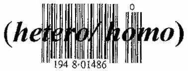

同声传译 | “异性恋和同性恋都不存在。”
QUEER\ KWIER:
adj.:1.differing from the usual or
normal: PECULIAR, STRANGE
2.HOMOSEXUAL,
BISEXUAL,TRANSGENDERED,
HETEROSEXUAL, or any
combination of predetermined
sexualities 3. COUNTERFEIT
vb.:DISRUPT
n: one that is queer.

这篇文章的很大一部分都是关于语言的使用/滥用。语言和确认的性别两者都是社会构建的产物，都有一定的局限性。人们用这两者尝试着定义我们是谁。给一个人贴上类似酷儿、异性恋、双性恋、同性恋等标签的想法是在试着用性定义一个人。当人们被迫或强迫自己形成一个社会用自己所主张的语言和定义反对的身份时，问题就出现了。语言是定义不可定义的一种尝试，而艺术敢于跨越边界进入非语言的表达。
语言常常创造出一种想象中的我们/他们的二分法，用来保护人们不受他们所认为的他者或是他们领域之外的东西的影响。我们使用语言给非异性恋者贴上了标签，对ta们进行分类、边缘化和贬低。如果我们考虑用其他的词来代替酷儿的话，我们只会用将酷儿这一性别定义为“不正常”或定义为“多余”的词，而不是表示颂扬的词。例如：fag、dyke、butch、femme、flamer、muff diver、cock sucker等词，都是一个社会用来控制那些被认为是不正常的人的词，忽视了所有性向的多样性而只看到了异性恋。

异性/同性的对立是一种简化的、极权的、静态的定义。这一对立创造了一种不可能存在的理想状态，因为很少人只被男性或女性所吸引。事实上，我敢说，有多少人就有多少种性别。一个完全的异性恋或完全的同性恋要求两者（对同性和对异性的偏好）完全分离，并规定人们要么是百分之百的异性恋，要么是百分之百的同性恋。
同性之间的性吸引、性行为和互动是真实存在的东西。有一个观点是说，这些东西（同性之间的性吸引、性行为和互动）包含着独立又和异性性吸引不同的性别认同。这两者被认为是截然相反的。性别认同的说法仅仅是一个观点罢了。性和性别以及关于这所有的变化都是真实存在的，但是（绝对的）异性恋和（绝对的）同性恋不是。这样的想法使人们保持一致，并给出限制，使两种性向绝对不会混淆。认为（绝对的）异性恋和（绝对的）同性恋是真实存在的就等于认为性向是一成不变的，性向在全世界有着相同的文化意义。然而事实并不是这样，性向是会随时间、文化、地点的变化而变化的。
翻译 | 文文
校对 | 肯
编辑 | 文文

*推荐阅读*

这一次点击“阅读原文”真的可以阅读原文了